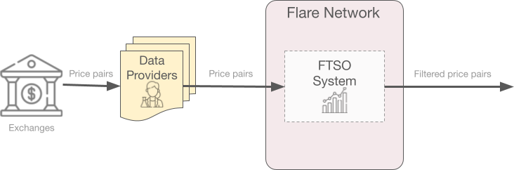
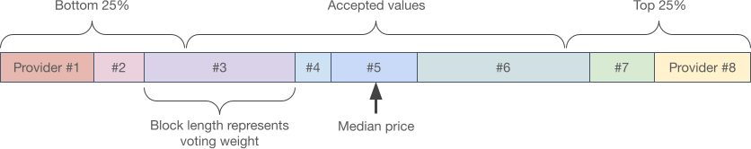

FTSO#
Introduction#
The Flare Time Series Oracle (FTSO) is a smart contract running on the Flare network that provides continuous estimations for price pairs. It does so in a decentralized manner (no single party is in control of the process) and securely (it takes a lot of effort to disrupt the process).
To achieve this, a set of independent data providers retrieves price pair information from external sources (like centralized and decentralized Exchanges) and supplies it to the FTSO system. This information is then weighted according to each provider's voting power and a median is calculated to produce the final estimate.

Data providers that supply useful information (price pairs that are not removed as outliers because they are too far away from the median value) are rewarded, and the resulting price estimates are finally published on-chain.
This page gives technical details about the submission procedure, how the final estimate is calculated, how vote delegation works, how to submit price pairs, how to claim rewards and how to use the price information in an app.
Procedure Overview#
The following process runs continuously, producing new price estimates every Price Epoch, which are 3 minutes long.
-
Any user with an account (address) on the Flare network can act as an FTSO data provider, submit price signals and collect rewards.
Each epoch, only submissions from the 100 data providers with the most voting power are taken into account. An account's voting power is based on its wrapped
$FLRor$SGBbalance and the delegations made to it (see Vote Power below).Submitted data must be the current price (in
$USD) for one or more of the supported price pairs, currently:$XRP,$LTC,$XLM,$DOGE,$ADA,$ALGO,$BCH,$DGB,$BTC,$ETH, and$FIL. On Songbird, additionally, you have$SGB.More general data types might be added in the future.
-
FTSO data providers submit price pairs in rounds in a Commit and Reveal fashion, so they cannot peek at each other's submissions until a round is over.
This is akin to submitting prices in a closed envelope, so when the round is over all envelopes are opened.
During a 3-minute price epoch, providers fetch the information, run their algorithms and submit a hash of the data (commit). During the first half of the following price epoch (1.5 minutes) providers then submit the actual data (reveal).
See technical details about the submission process below.
-
The FTSO System calculates the resulting median price, taking into account each provider's voting power (see Resulting Price Calculation below).
Resulting price pairs are publicly available for 5 price epochs for any app or contract to read. Previous epochs can always be retrieved from an archival node.
-
For each price epoch in which the submitted data is close enough to the median price, data providers and their delegators are rewarded.
Rewards are accumulated in Reward Epochs (3.5 days on the Flare network, 7 days on Songbird) and can be claimed once the epoch finishes.
See Rewards below.
Resulting Price Calculation#
This is an overview of the filtering process that turns all submitted price pairs into a single estimate. See all details in the Flare whitepaper.

-
The contract in charge of each price pair calculates the resulting price for a Price Epoch (3 minutes) using the submissions received from all data providers during that epoch.
-
Each submission has a price and a weight. Weight is based on the data provider's voting power, as explained below.
-
The weighted median of the prices is the resulting price for the price epoch.
-
Submissions in the top and bottom 25% range are not rewarded.
Vote Power#
-
As explained above, an FTSO data provider's submissions are weighted by its Vote Power. A data provider's Vote Power is proportional to the amount of Wrapped Flare or Songbird tokens (
$WFLRor$WSGB) it holds, plus any amount delegated to it.Note
There also exists a Vote Power Cap which limits the influence of individual data providers to 2.5% of the total Vote Power on Flare, and 10% on Songbird.
Any Vote Power above this cap is ignored, meaning that those
$WFLRor$WSGBwould probably be more effective delegated to a different data provider. -
A snapshot of each data provider's Vote Power is taken once per reward epoch, and the resulting weight is then used throughout the next reward epoch.
-
The actual snapshot block is called the Voting Power Block and it is randomly chosen from the last blocks of the previous epoch (last 50% on Flare, last 25% on Songbird).
Note this only roughly corresponds to last 50% or 25% of the time, since block production times are not constant.
Reward epochs
The first reward epoch on Songbird started on Saturday, 18 September 2021 08:41:39 (GMT), 1631954499 in Unix time, and repeats every 7 days. This means that all Songbird reward epochs start on Saturday morning (GMT).
The first reward epoch on Flare started on Thursday, 21 July 2022 19:00:05 (GMT), 1658430005 in Unix time, and repeats every 3.5 days. This means that all Flare reward epochs start on Thursday evening (GMT) and Monday morning (GMT).
Delegation#
Holders of $FLR or $SGB tokens can delegate them to an FTSO data provider to increase its Vote Power and earn a share of its Rewards, resulting in a mutually beneficial arrangement.
Furthermore, delegated tokens are not locked, meaning that they remain in the user's control and the delegation can be removed at any time.
Delegation requires wrapping the native $FLR and $SGB into ERC-20 $WFLR and $WSGB tokens, a reversible operation that can also be undone at any time.
Note
Due to Vote Power being calculated once per reward epoch, new delegations do not take effect until the following reward epoch.
Moreover, if a change in delegation occurs after the Vote Power Block is sampled (see above), its changes are delayed an extra reward epoch.
Exception: Delegation revocation calls take effect immediately.
Find more details in the Delegation guide.
Delegation Procedure#
The easiest way to delegate your tokens is through a supported wallet like Bifrost, or a dapp. Some FTSO data providers have already started providing these dapps as a convenience. Take a look at flaremetrics.io and pick the one you prefer.
For advanced users, Manual Delegation and Claiming below briefly explains how to delegate manually by interacting directly with the FTSO smart contracts.
Rewards#
A percentage of the annual network inflation is reserved to reward FTSO data providers, and distributed uniformly among the year's reward epochs (reward epochs are 7-days long on Songbird and 3.5-days long on Flare).
Each reward epoch, rewards are distributed among all data providers whose submission fell within 50% range of the calculated median price.
Then, each provider takes a configurable fee (20% by default) and distributes the rest of the reward among all contributors to its Vote Power, i.e. itself and all its delegators, according to the delegated amounts. Find more details in the Delegation guide (Reward Claiming).
Reward Claiming Procedure#
FTSO rewards are not automatically transferred to their recipients.
Instead, the amounts are accumulated in the FtsoRewardManager contract (see System Architecture below) and must be claimed once the reward epoch is finished.
Claiming requires a contract call and therefore a slight gas expenditure. To save on gas costs, multiple reward epochs can be claimed simultaneously, however, rewards expire after 90 days so be careful. Moreover, you probably want to claim soon, to re-delegate the received amount and obtain compounded rewards.
It is also worth noting that:
-
Rewards are paid in the network's native currency (
$FLRon Flare,$SGBon Songbird). -
Data providers and their delegators must claim independently.
Again, the simplest way to claim your FTSO rewards is through a supported wallet like Bifrost, or a dapp. Take a look at flaremetrics.io and pick the one you prefer.
For advanced users, Manual Delegation and Claiming below briefly explains how to claim manually by interacting directly with the FTSO smart contracts.
Technical Details#
This section is aimed at developers.
System Architecture#
The FTSO system is composed of multiple smart contracts running on the Flare Network.
These are the most relevant contracts and their purpose:
-
FTSO: Each tracked price pair is handled by its own FTSO contract, including calculation of the filtered price feed.
Access this contract to retrieve a specific price pair or information about it.
Note
If an FTSO contract is redeployed (for example, to fix a bug), its address will change and apps using it will need to be updated. The FTSO Registry contract below keeps track of this so you do not have to.
You can retrieve the addresses of all FTSO contracts using the
getAllFtsosmethod in the FTSO Registry (below). -
FTSO Registry: Aggregates the output of each individual FTSO contract and provides a convenient one-stop API to retrieve all price pairs.
-
Price Submitter: This is the contract the FTSO data providers use to submit their data.
-
Reward Manager: Use this contract to claim your rewards, whether you are a data provider or a delegator.
-
Wrapped Native (WNat): Not exclusively related to the FTSO system, but required to wrap and unwrap native tokens into the
$WFLRand$WSGBthat delegation requires.
Note
The Contract Addresses page explains how to retrieve each contract's address in a secure way.
Other contracts (like the FTSO Manager or the FTSO Daemon) are only meant for internal use by the FTSO system.
Manual Delegation and Claiming#
This is a quick summary of the contracts and method calls required to manually delegate and claim FTSO rewards. Find more details in the Delegation guide.

-
Obtain wrapped tokens
Voting power is delegated to a data provider using wrapped tokens (
WFLRandWSGB) whereas the native tokens areFLRandSGB.One wrapped token can be obtained for each native token without cost (except gas fees) using the
WNatcontract'sdepositmethod. Tokens get locked inside theWNatcontract and cannot be used until they are unwrapped.Wrapped tokens can be unwrapped back to native tokens at any time using the
WNatcontract'swithdrawmethod.Wrapped tokens adhere to the ERC-20 standard, besides
depositandwithdraw:function deposit() public payable override;function withdraw(uint256 amount) external override; -
Delegate
Choose the percentage of the total wrapped tokens you want to delegate to each data provider (up to two). Should the wrapped token balance change later, the delegated amounts are automatically adjusted.
Delegation is performed through the
WNatcontract too, using thedelegatemethod:function delegate(address _to, uint256 _bips) external;You need to provide the address (
_to) of the chosen data provider and the percentage (_bips) of the total wrapped amount you want to delegate in bips (hundredths of 1%, so 100% is 10000 bips).After a successful invocation of this method, delegation is complete. The following reward epoch will take the newly delegated tokens into account when computing your selected data provider's weight. If the data provider submits useful data and garners any rewards, you will be able to claim your share once the reward epoch is over.
-
Claim rewards
FTSO rewards are claimed using the
claimRewardmethod of theFtsoRewardManagercontract:function claimReward( address payable _recipient, uint256[] memory _rewardEpochs ) external returns ( uint256 _rewardAmount );This call must be made from the address that earned the rewards, but they can be sent to a different recipient, hence the
_recipientparameter.Rewards can be claimed for several epochs at once so
_rewardEpochsspecifies the list of epochs to claim for. To get the list of epochs with pending rewards you can use thegetEpochsWithUnclaimedRewardsmethod.Moreover, the claimed reward is typically re-delegated, which involves wrapping the received
$FLRor$SGB. For convenience, theclaimAndWrapRewardmethod is offered (only on Flare) to perform claiming and wrapping in a single call.Note
For security reasons, the
FtsoRewardManagercontract contains a limited amount of tokens and is replenished periodically. If you are unable to claim your rewards because the contract is empty, please try again the next day. This might happen when all delegators claim their rewards in a short period of time, so it is usually better to avoid claiming right when the reward epoch finishes.
Price Submission Process#
Data submission uses a Commit and Reveal scheme to prevent providers from peeking at each other's submissions until a round is over. To speed up the process, both phases are actually overlapped so:
-
All Commit phases happen continuously in so-called 3-minute Price Epochs.
-
Reveal phases happen during the first half (first 90 seconds) of the following Commit phase.
-
The published price information is therefore updated every 3 minutes.
Only a hash of the data is submitted during the Commit phase. Next, in the Reveal phase the actual data is sent. If its hash does not match the previous commitment, the data is discarded.
Submission API is slightly different for the Flare and Songbird networks:
FTSO data providers submit price information through the PriceSubmitter contract.
-
Commit: A single hash is needed for all price pairs.
function submitHash( uint256 _epochId, bytes32 _hash ) external; -
Reveal: After all price data, a single random number must be submitted.
function revealPrices( uint256 _epochId, uint256[] memory _ftsoIndices, uint256[] memory _prices, uint256 _random ) external;
FTSO data providers submit price information through the PriceSubmitter contract.
-
Commit: A separate hash is needed for each price pair.
function submitPriceHashes( uint256 _epochId, uint256[] memory _ftsoIndices, bytes32[] memory _hashes ) external; -
Reveal: Along with each price a random number must be submitted.
function revealPrices( uint256 _epochId, uint256[] memory _ftsoIndices, uint256[] memory _prices, uint256[] memory _randoms ) external;
Using the Price Pairs#
The price pairs produced by the FTSO are publicly available on the Flare and Songbird networks.
All pairs can be retrieved either through the FtsoRegistry contract or directly through one of the Ftso contracts that handle each individual price pair.
In any case, the getCurrentPrice method is used:
From the FtsoRegistry contract:
function getCurrentPrice(
uint256 _ftsoIndex
) external view returns (
uint256 _price,
uint256 _timestamp
);
Where _ftsoIndex is one of the allowed indices returned by getSupportedIndices, for example.
From the FtsoRegistry contract:
function getCurrentPrice(
string memory _symbol
) external view returns (
uint256 _price,
uint256 _timestamp
);
Where _symbol is one of the allowed symbols returned by getSupportedSymbols, for example.
First you need to obtain the address of the Ftso contract managing the price pair you are interested in.
You can use getSupportedIndicesSymbolsAndFtsos from the FtsoRegistry, for example.
Then call getCurrentPrice on the FTSO directly:
function getCurrentPrice(
) external view returns (
uint256 _price,
uint256 _timestamp
);
Note
Individual FTSO contracts might be updated from time to time, changing their address.
It is advisable not to cache these addresses and always use the FtsoRegistry instead.
GetCurrentPrice returns the requested price (the outcome of the previous 3-minute price epoch) in $USD multiplied by 100'000.
So, for instance, a return value of 2603 means a price of 0.02603 USD (There are only 5 significant decimal places).
A standard Unix timestamp of the last price update is also returned.